Agents that write code, in a sandbox you control.
A Go control plane runs Pi agents inside per-project containers and serves a browser UI: transcript, file tree, diff view, terminal, built-in browser, and an operator console with quotas, egress policy and an audit trail.
GoNext.jsSQLite Docker · Kubernetesself-hosted
How it works
One browser session talks to one control plane. The control plane owns the database, the model gateway and the agent processes; the sandbox owns the workspace. Everything the agent does — its files, its shell, its browser — happens on the sandbox side.
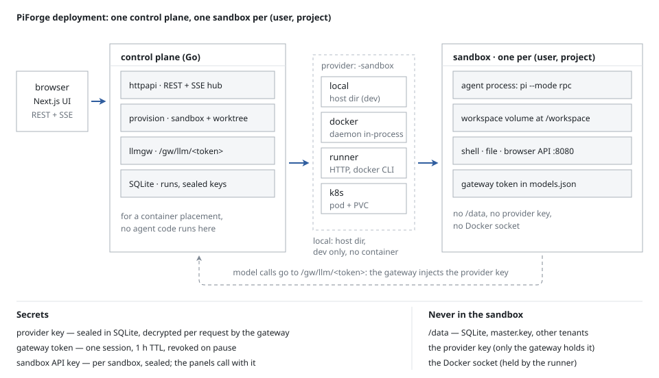
One message: POST /v1/sessions/{id}/messages → resolve the model → spawn or
reattach the agent → the agent calls back through the gateway with a token bound to its own
sandbox → the control plane checks signature, revocation, source address and an HMAC proof,
then calls the real provider → the response streams back → the agent's RPC events are
persisted and broadcast over SSE.
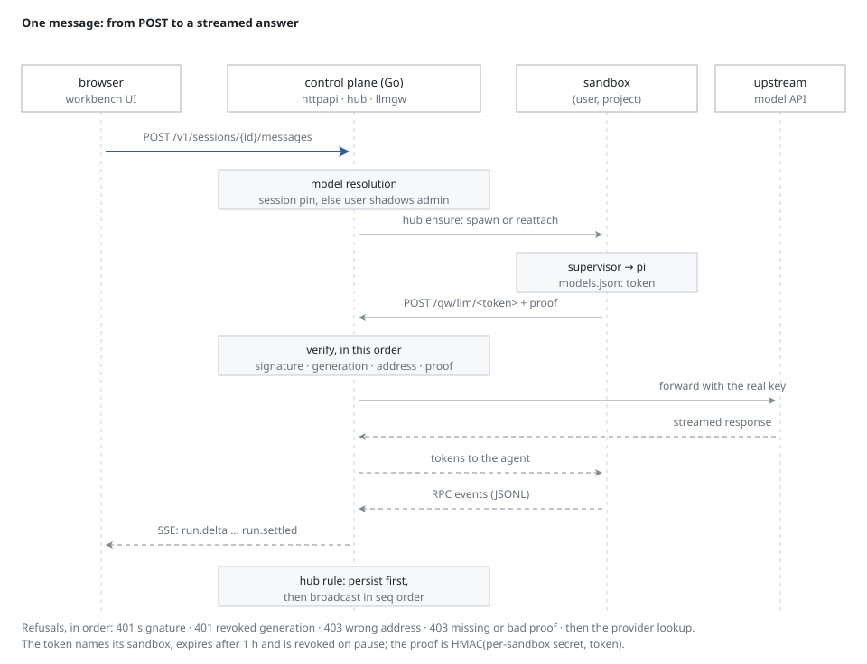
Run it
Docker Engine 25+, git, and Go 1.25+ if you build from source.
$env:PIFORGE_BOOTSTRAP_PROVIDER_KEY = "<your provider key>"
pwsh scripts/up-isolated.ps1 # three images, a preflight, the stack on :7723docs/HANDOFF.md covers flags, data layout, keys, backup and restart behaviour.
Screenshots
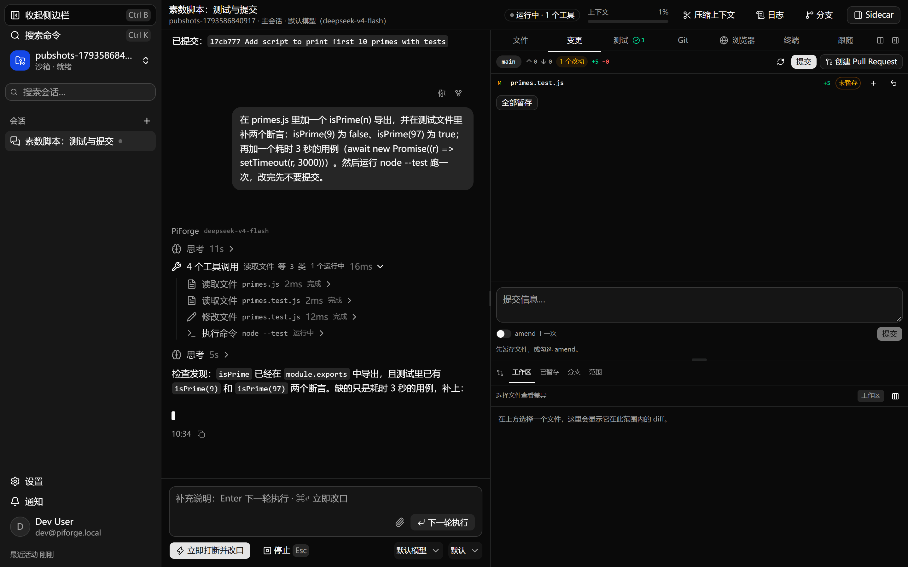
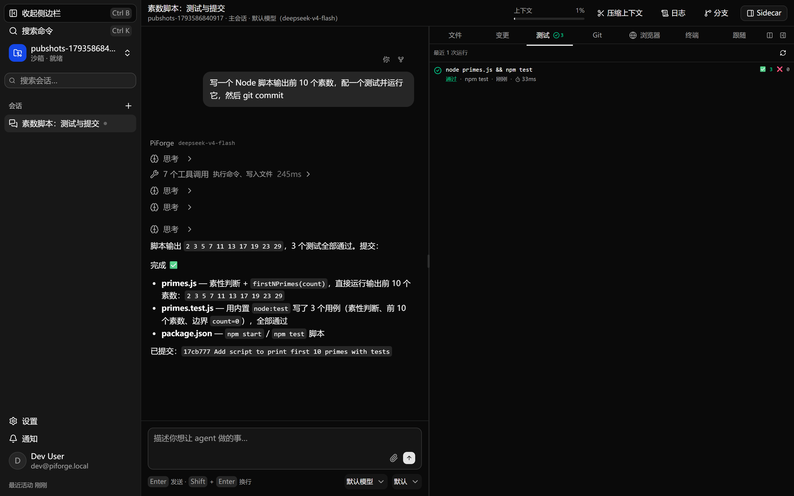
node --test: counts, duration, command.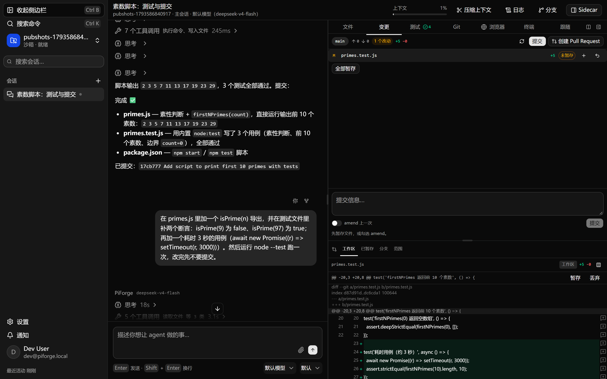
+N/−N.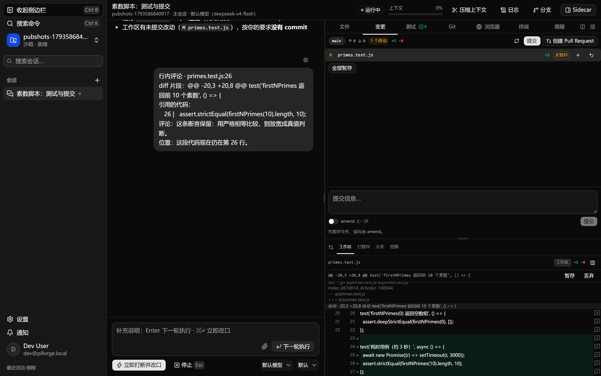
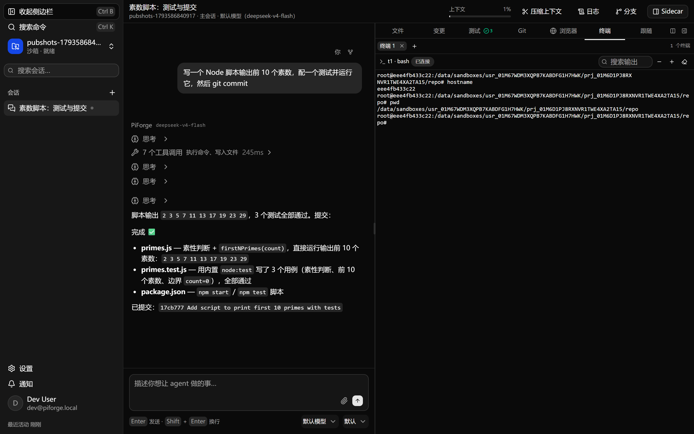
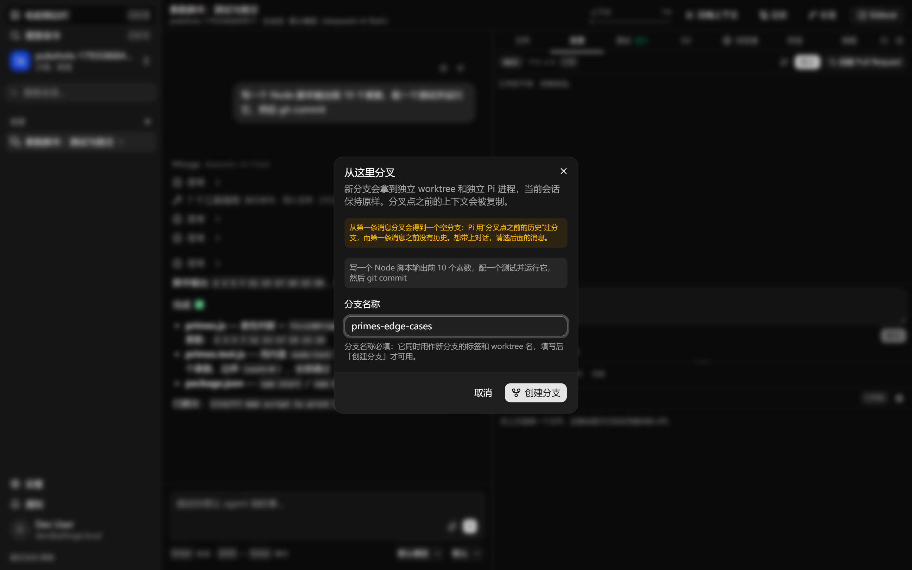
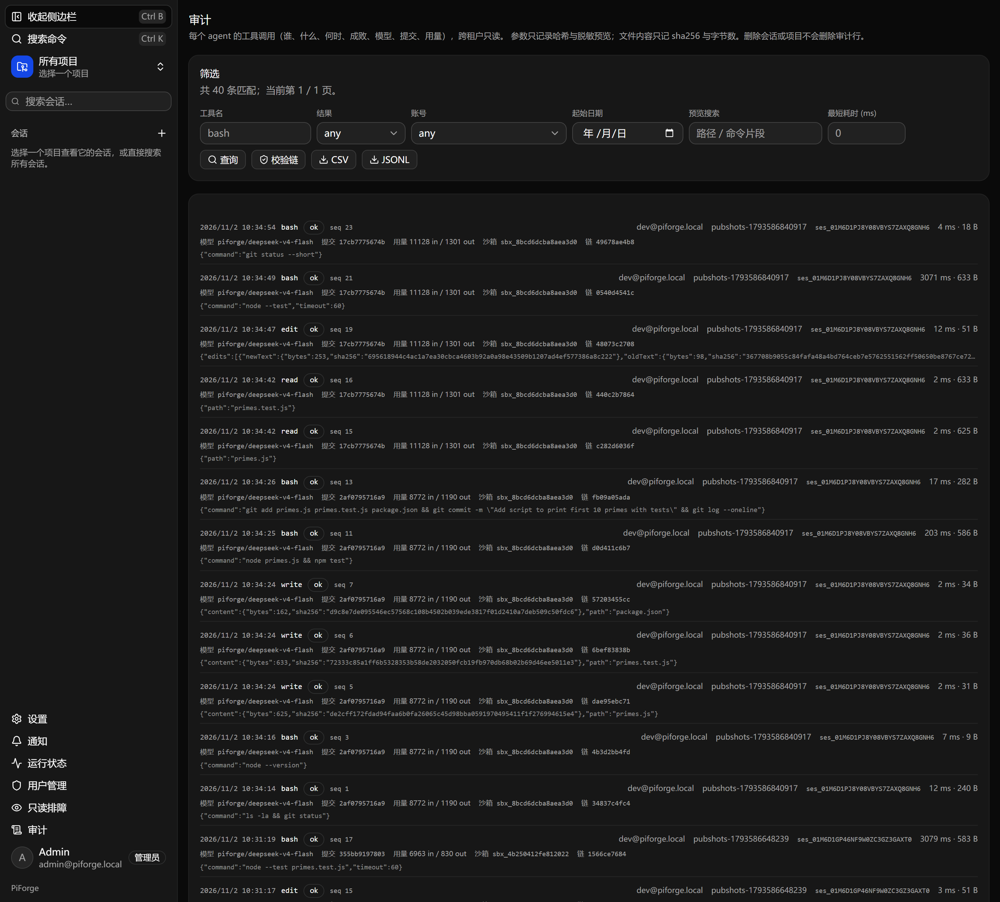
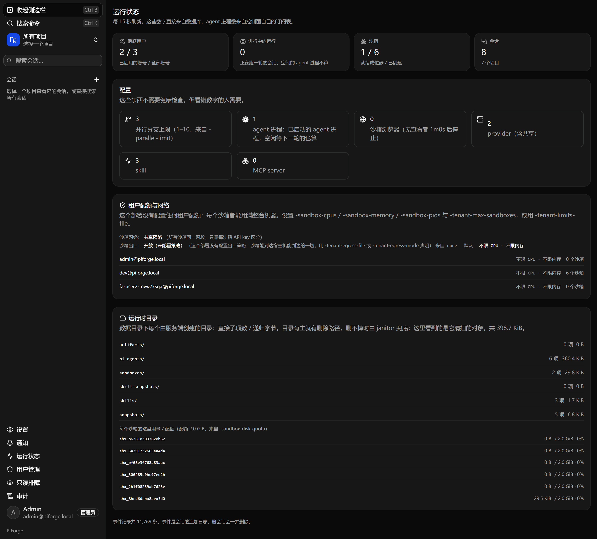
Tenancy
One sandbox per (user, project). Each tenant gets its own Docker network, joined only by the control plane and the runner, so a sandbox cannot reach another tenant's sandbox or the control plane's own port. Egress is closed by default: a sandbox reaches the model gateway and nothing else, and the agent keeps working because the gateway is what it needs.
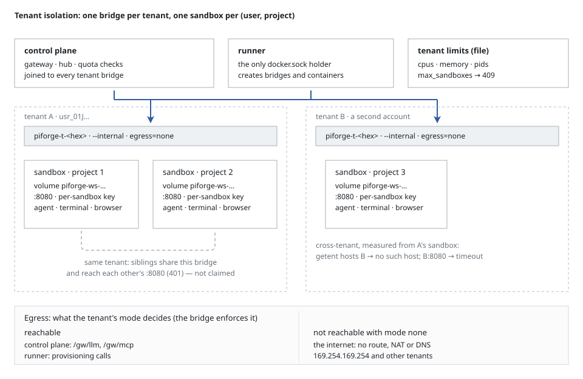
409 naming the limit.What ends a run
A run has exactly one terminal state and the control plane writes which one:
agent_settled, a user stop, a reconciliation pass after the process died, or a
restart with a reattach. The transcript says what happened and what survived — including
the case where the sandbox is gone and nothing can be continued.
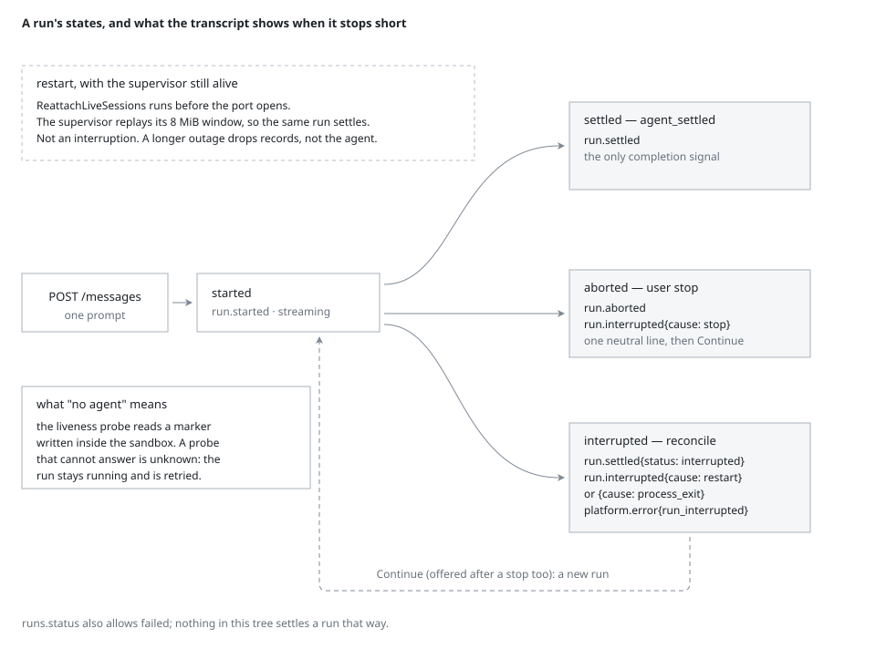
How it is verified
| Gate | Command | Last result |
|---|---|---|
| Backend | cd backend && go test ./... -count=1 | 45 packages, 0 failures |
| Web unit | pnpm --dir web test -- --run | 307 tests / 42 files |
| End-to-end | cd e2e && pnpm test | 182 tests, 0 flaky |
| From zero | pwsh scripts/deliver-check.ps1 | 125 checks |
| Lint | pnpm --dir web lint | 0 errors / 0 warnings |
The from-zero drill starts with a throwaway volume and a seeded
account, so it fails if the product needs a step the documentation does not describe. The
requirement ledger (docs/STATUS.md) carries one row per promise with the test
that asserts it.
Isolation, tenancy and the credential boundary were attacked on purpose, six times. The
findings and their fixes are in docs/EXECUTION-BOUNDARY.md,
docs/DATA-FLOW-AUDIT.md and docs/AUDIT.md — including what the
audit chain cannot prove.
Limits
- One host. Control plane, runner and sandboxes are containers on one Docker daemon. The Kubernetes provider exists and was run against a real cluster, but multi-host operation and the Linux-native checks are not signed off.
- Containers, not microVMs. A kernel bug is the escape path. If your tenants are adversarial rather than merely untrusted, use gVisor or a VM runtime.
- Same-tenant siblings share a bridge. Isolation is per tenant, not per sandbox.
- Egress is all-or-nothing.
noneoropenper tenant; no hostname allow-list. - Audit is tamper-evident, not tamper-proof. Rows are chained; anything with database write access can recompute the chain.
- Windows paths are exercised, native Linux is not.